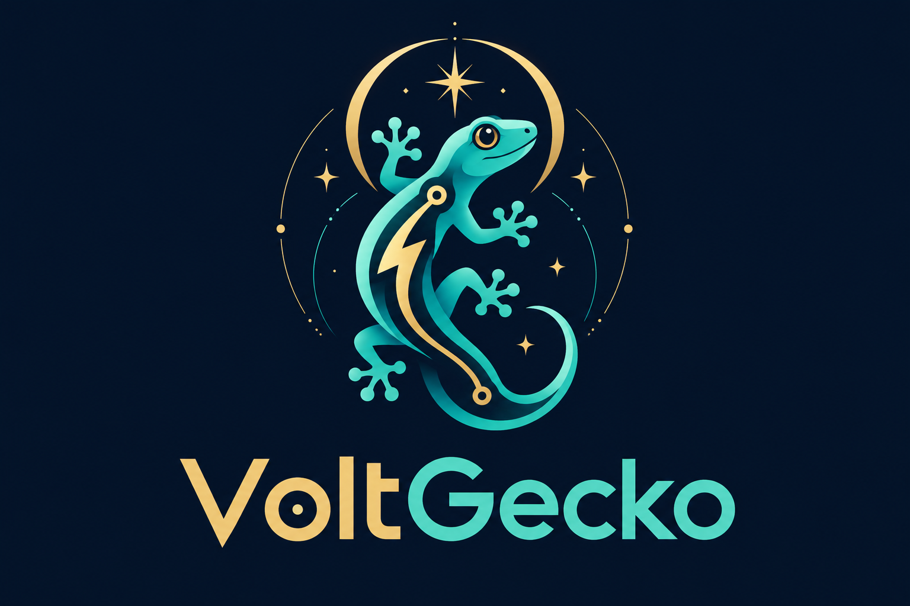
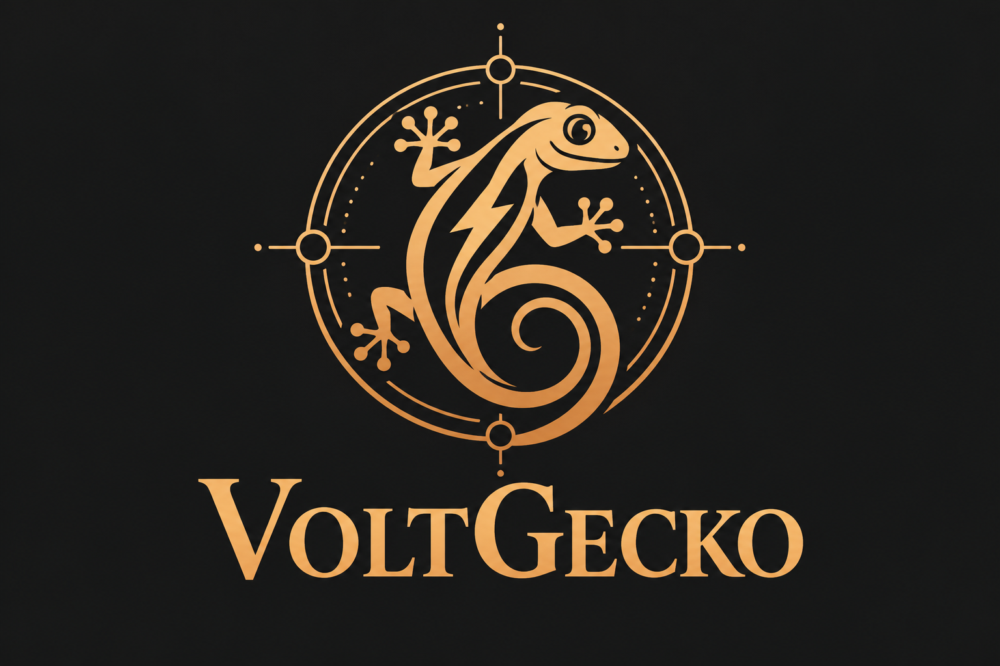
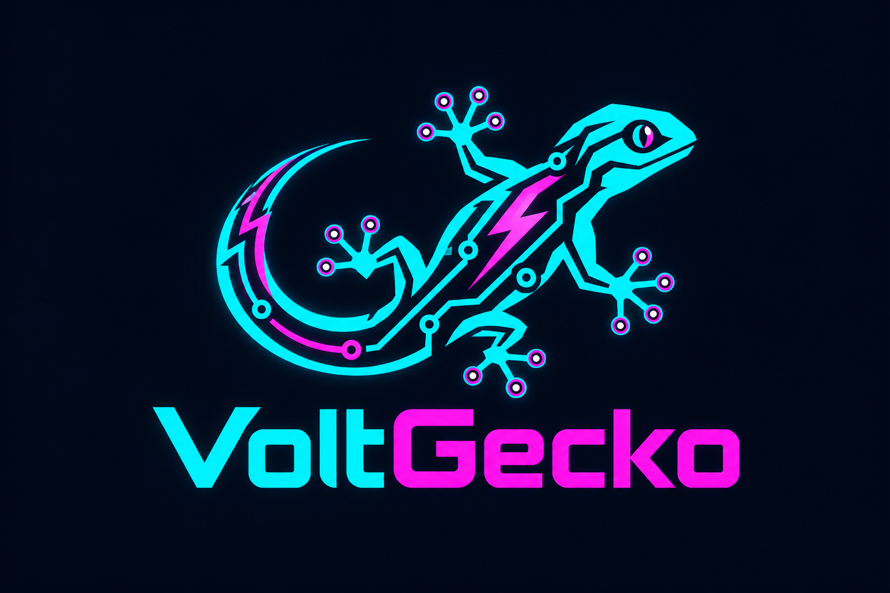
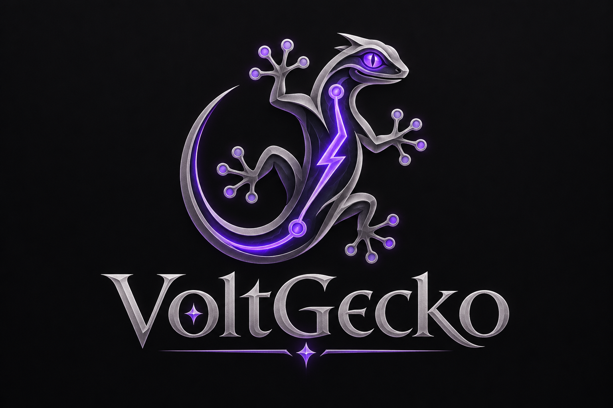
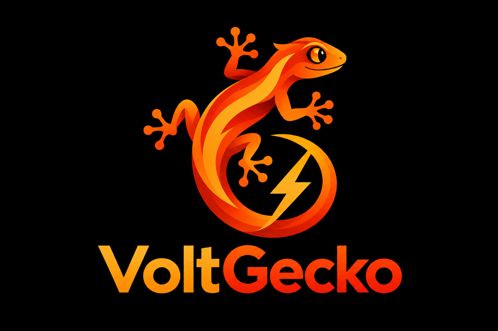
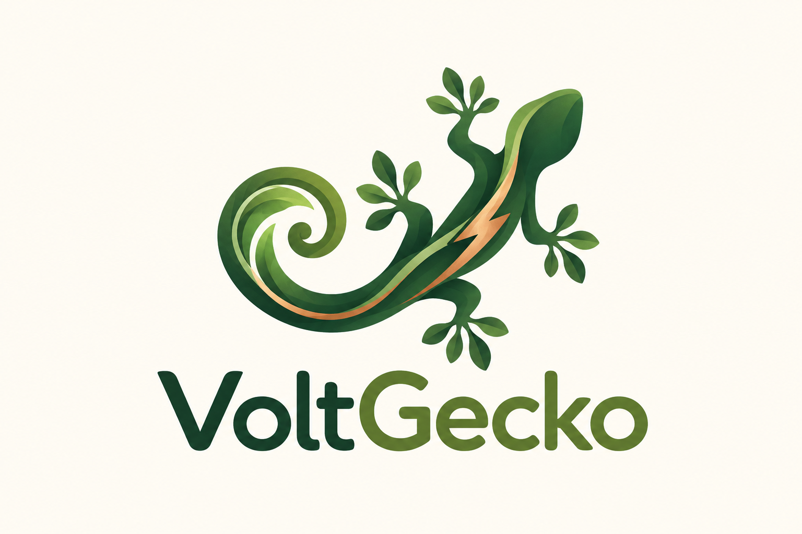
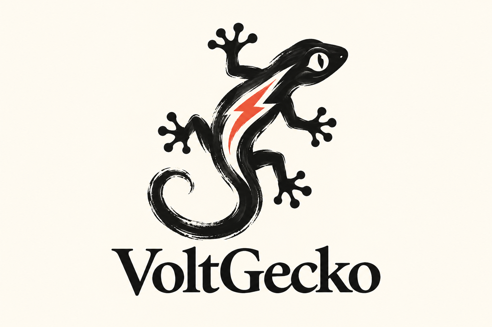
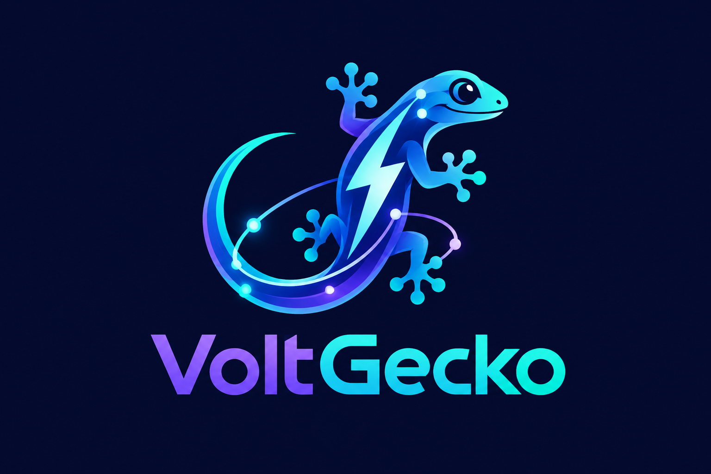
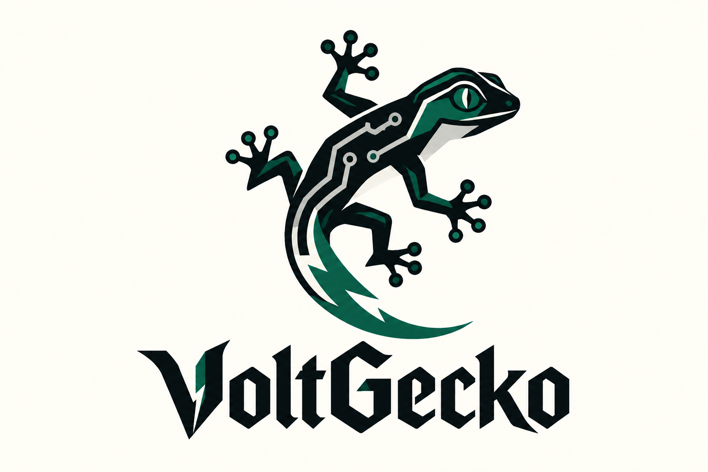
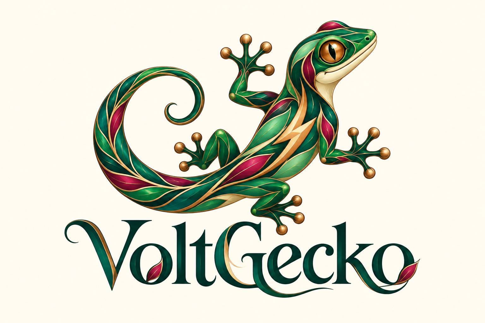

01
Asztrális
Égi geometria és spirituális szimbolika: a gekkó mint az energia őrzője.
VoltGecko · arculati felfedezés
Spirituális, művészi, cyber és sötét fantasy irányok. Nyisd meg a képeket teljes méretben, és hasonlítsd össze, melyik világ illik a szoftverhez.

Égi geometria és spirituális szimbolika: a gekkó mint az energia őrzője.

Ősi jelek és műhelyhangulat: az elektromosság mint átalakító erő.


Misztikus címerhangulat, árnyékok és egy erőteljes gekkókarakter.


Organikus formák és természetmágia: nyugodtabb, élő karakter.

Gesztusok, ritmus és kézi vonalak: szabadabb művészi megközelítés.

Csillagközi lépték és fénylő energia: a gekkó egy tágabb univerzumban.


Indázó vonalak, díszítőművészet és elegáns, organikus keretezés.